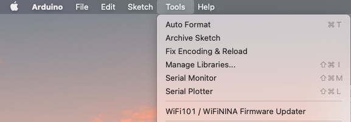
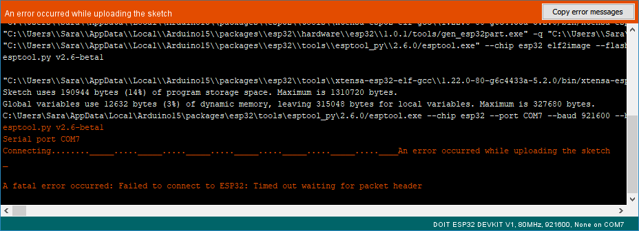
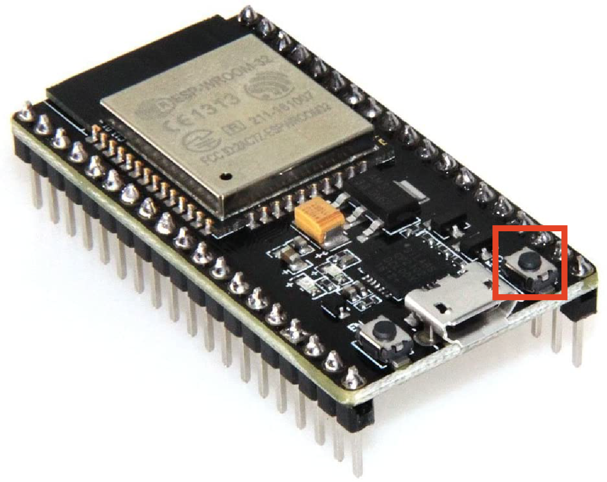

6.810 Engineering Interactive Technologies (fall 2021)
Install Arduino IDE and ESP Drivers
In class, we will use the ESP32 as the microcontroller and the Arduino IDE for programming the ESP. Below you find the install steps to set everything up on your computer.
Steps:
- Install Arduino IDE
- Install ESP Core Board Manager
- Install USB Cable Driver
- Upload Test Program to ESP32
(1) Install Arduino IDE
Windows, Mac, *Nix Users: First, install the Arduino IDE. Even if you've already got it, install it again to get the most up-to-date distribution. The Arduino IDE can be found here. Download the appropriate distribution for your laptop's operating system. For Windows Users it is important to NOT install the Windows App, and instead install only the regular Windows distribution.
(2) Install ESP Core Board Manager
Next install the ESP32 core.
Windows, Mac Users: Open the Arduino IDE and do the following:
- In
Windows, go to File>Preferences. In MacOS, go to Arduino>Preferences.
- Under the
Additional Boards Manager URL field paste in: https://dl.espressif.com/dl/package_esp32_index.json and then click OK
- Now go to
Tools>Boards>Boards Manager
- In the window that pops up, search for
esp32. One option should appear. Install it.
- Close your Arduino IDE and reopen it.
- Now check under
Tools>Board if you can select the DOIT ESP32 DEVKIT V1. If you see it, you can move on.
*Nix Users: We strongly recommend installing the ESP core directly from the git repository. The Arduino Board Manager that Windows and Mac Users can use does a poor job when setting the appropriate permissions in the broad array of Linux environments. To install the ESP32 core:
- go to the git repository website here
- Scroll down until section
Installation Instructions and choose the Using Arduino IDE with the development repository and Instructions for Debian/Ubuntu Linux.
- copy paste the script and run it on your terminal. Install everything using
Python2, not Python3!
- Pay close attention to what the output of the script says. If there is an error or some text about
unicode not existing you need to change the word python3 to python2.7 in that command string.
- Close your Arduino IDE and reopen it.
- Now check under
Tools>Board if you can select the DOIT ESP32 DEVKIT V1. If you see it, you can move on.
(3) Install USB Cable Driver
Finally, you still need to install the USB cable driver.
Windows Users: The Arduino Installer should install the USB Driver automatically. But in case it doesn't work, download the USB cable driver from here. Windows 10 users should use CP210x Universival Windows Driver, and Windows 8.1,8 and 7 users can use CP210x Windows Driver. Unzip the folder, run Installer_x64.exe if 64 bit or Installer_x86.exe if 32 bit. If you get bugs, please let us know.
MacOS Users: Download the CP210x VCP Mac OSX Driver from here. After installing, go to System Preferences > Security and click on the message about enabling Silicon Labs Drivers on your machine and confirm that you are ok with this. Also if you see a message that says Some system software was blocked from loading open it and confirm that you are ok loading the software.
*Nix Users: There are two versions of the USB cable driver for *Nix users: Linux_3.x.x_4.x.x_VCP_Driver_Source.zip and Linux_2.6.x_VCP_Driver_Source.zip. We recommend trying the version 3/4 first.
Testing if the USB driver works (all OS): Let's check if the USB cable driver was installed correctly. Look at the entries in the Arduino menu Tools>port *before* plugging in your ESP with the USB cable. You should see either none or one entry listed. Take note of what is there. Now plug in your ESP microcontroller and take another look at Tools>port. You should hopefully see one more entry. On Windows this will often be something like COM3. On Mac and *Nix it will be USB_to_UART.... If you see this, you can move on.
(4) Upload Test Program to ESP32
Once you have the ESP32 Core selected under Tools->Board and USB port selected under Tools->Port, the last step is to check if you can upload and run a program on your microcontroller.
// Arduino Test Code - Print "6.810 Engineering Interactive Electronics" on Serial Monitor
void setup() {
Serial.begin(9600);
}
void loop() {
// Print 6.810 Engineering Interactive Electronics to see it on the Serial Monitor
Serial.println("6.810 Engineering Interactive Electronics");
}
Print to the Serial Monitor: Load the code given above into the Arduino Editor. Hit the Upload button, to send the program to your microcontroller. Now open the Serial Monitor on your Arduino Editor, by going to Tools -> Serial Monitor.

On opening the Serial Monitor, you should be able to see 6.810 Engineering Interactive Electronics being printed repeatedly on the screen. This means that your program was successfully uploaded and run on the microcontroller.
Timed Out Error: If you are having trouble uploading code to the ESP32, even with the corrected port selected. And you are seeing some error message like following Failed to Connect to ESP, hold down the BOOT/FLASH button on your ESP32 board (the button on the bottom right) while re-uploading the program at the same time. If you are still having trouble, let the teaching team know.


*Nix Users: On your OS, it can happen that you don't have write permission on the USP port, i.e. you will not be able to upload code to your ESP32. This can be fixed temporarily after the ESP has been plugged in by typing into the command line: sudo chmod 666 on the port your ESP32 shows up. On our Ubuntu box, it was either /dev/ttyUSB1 or /dev/ttyUSB0). This, however, is only a temporary fix, and will need to give yourself write permission to the USB port every time you plug in the device. A long term solution is to add yourself to the dialout group. Do this by running the following command sudo usermod -a -G dialout YOUR_USERNAME_HERE where you replace the username with your own. Once this is done, you will need to restart your computer for this change to take permanent affect.
Windows, go to File>Preferences. In MacOS, go to Arduino>Preferences.Additional Boards Manager URL field paste in: https://dl.espressif.com/dl/package_esp32_index.json and then click OKTools>Boards>Boards Manageresp32. One option should appear. Install it.Tools>Board if you can select the DOIT ESP32 DEVKIT V1. If you see it, you can move on.Installation Instructions and choose the Using Arduino IDE with the development repository and Instructions for Debian/Ubuntu Linux.Python2, not Python3!unicode not existing you need to change the word python3 to python2.7 in that command string.Tools>Board if you can select the DOIT ESP32 DEVKIT V1. If you see it, you can move on.
// Arduino Test Code - Print "6.810 Engineering Interactive Electronics" on Serial Monitor
void setup() {
Serial.begin(9600);
}
void loop() {
// Print 6.810 Engineering Interactive Electronics to see it on the Serial Monitor
Serial.println("6.810 Engineering Interactive Electronics");
}